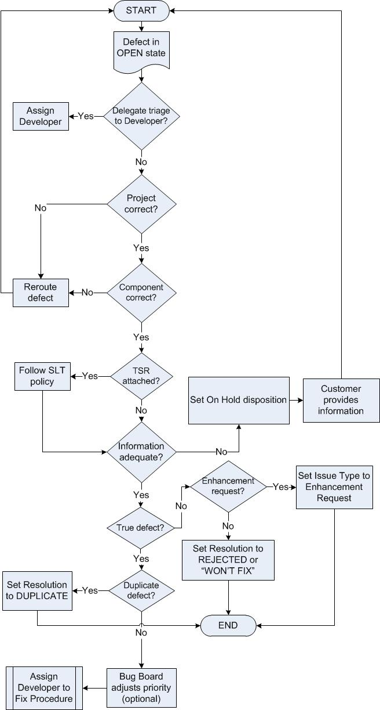

Triage Defect Procedure¶
The purpose of defect triage is to:
ensure new defect records have been properly routed and adequately documented,
weed out non-defects, and
initiate timely action to address security and other high priority defects, especially customer-reported defects.
The focus of triage is to quickly assess the defect record and to defer a thorough technical investigation, including attempts at reproduction of the problem.
The defect record is taken at face value: that the submitter is competent in the use of the product and that the symptoms are accurately reported. This is especially essential in dealing with defects that are difficult to reproduce because it is assumed that the defect exists even if it can’t reproduced.
The Engineering Manager, Technical Feature Owner or Scrum team is responsible for this procedure. In the case of a customer reported defect, it may be necessary for the Domain Lead to assign the defect for a timely resolution.
Entry Criteria |
|
Inputs |
|
Exit Criteria |
|
Outputs |
|
Steps¶

Identify new defect record responding to either e-mail notifications, or running periodic queries, identify relevant defects in Status “Open”.
Examine the defect record Summary and Description to determine if they describe unexpected or incorrect behavior or properties. Ensure that the Description and Internal Description fields clearly establish the expected behavior, as criteria for a fix.
If the defect belongs to another Domain Lead, reroute it
If the new component is in the same project
Click on Edit
Change the Component and Assignee fields
Click on Update to save changes
If the new component is in a different project
Click on More Actions -> Move
Select the New Project
Update any other fields as necessary
Click on Move to save the changes
If the provided data is inadequate, return the defect to the submitter
Take this course only if the provided data is inadequate to understand the symptoms or configuration.
To return for completion, click on On Hold button, set On Hold Disposition to “Waiting for reporter” and provide a reason.
If the reported defect is an Enhancement Request, re-categorize it
Edit the record
Set Issue Type as “Enhancement Request”
Click on Update to save and exit from the record.
If the reported defect is NOT a true defect, reject it
This category includes non-defects.
Usability issues that cause user error or confusion are true defects and should not be rejected.
To reject the record, click Resolve and select Resolution as “Rejected” or “Won’t Fix”
Record the rationale in a Comment and click on Resolve button.
To withdraw the record, request the submitter to withdraw the defect
Record the rationale in a Comment and click on Withdraw button.
If the defect is a duplicate of an existing defect, mark it as “Duplicate”
To Duplicate the record, click Resolve Issue and set Resolution to “Duplicate”.
Click More Actions -> Link
Choose “duplicates” in the drop down for This issue
Enter the original defect issue number in the Issue field
Click Link
Click the Close Issue button - if that button is not available, click Workflow > Close Issue
Choose “Duplicate” as the Resolution
Click Close Issue
Plan and take appropriate action. There are several options for completing this task:
Do nothing now. Wait for the Bug Board to finalize the priority (see Bug Board Review Procedure).
Assign a defect fixer to a fix immediately (see Assign Defect Fix Procedure). This is appropriate for Customer-reported defects of high priority requiring immediate attention.
A notification will be automatically sent to the submitter.
Variations¶
Developer-conducted Triage
Developers submitting defects against their own work products may perform their own triage, and assign a defect to themselves to be fixed.
Re-submission of On-Hold Defects
When defects are resubmitted, they recycle through triage. The focus of the second round is the same as the initial triage: to ensure the missing information has been provided to allow completion of the triage.
Next Activity in Process¶
Depending on decisions described above:
Role |
Activity |
Engineering Management/ Domain Lead |
|
Bug Board |
Change Log¶
Date |
Change Request ID |
Version |
Change By |
Description |
05/08/2020 |
N/A |
0.1 |
Martin Cote |
Initial Draft |
08/07/2020 |
N/A |
0.2 |
Shree Vidya Jayaraman |
Updates based on Rodger’s feedback |
08/13/2020 |
N/A |
0.3 |
Shree Vidya Jayaraman |
Updates to the Entry Criteria and Diagration based on the EPMs feedback |